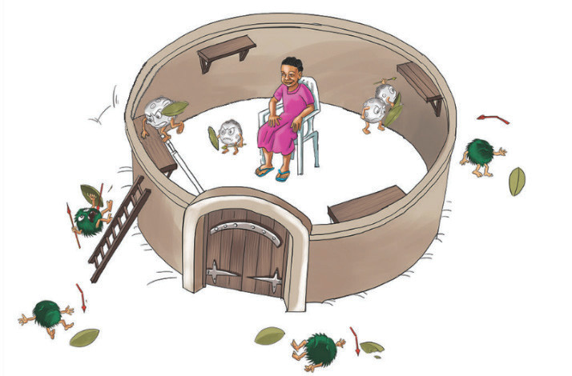

Sura ya Kumi na Tatu
Kinga ya mwili
Mwili wa binadamu wenye afya una uwezo wa kupambana na vimelea vinavyosababisha magonjwa. Uwezo huo huitwa kinga ya mwili.
Soma habari ifuatayo kwa makini, kisha fanya Zoezi la 1. Kinga ya mwili ni uwezo wa mwili kupambana na viini vya magonjwa. Chembe hai nyeupe za damu ndizo zinazohusika kulinda mwili usishambuliwe na viini vya magonjwa. Chembe hai hizo hufanya kazi kama askari wanavyolinda ngome yao isishambuliwe na adui. Katika hali hii, ngome hufananishwa na mwili wa binadamu na chembe hai nyeupe kama askari. Angalia Kielelezo namba 1.

SAYANSI MEMKWA 2.indd 118
21/08/2021 11:22